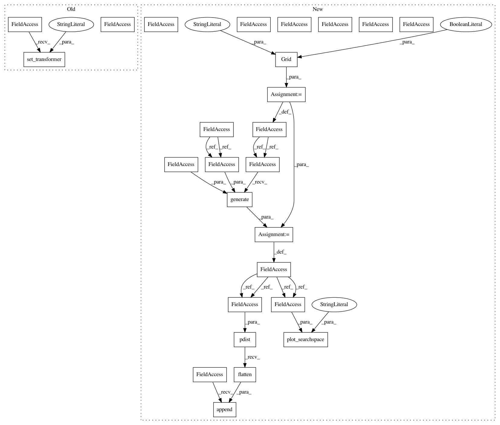

3c956a6c512724ca3f75062ffcae40dfc0568427,examples/sampler/initial-sampling-method.py,,,#,50
Before Change
n_samples = 10
space = Space([(-5., 10.), (0., 15.)])
space.set_transformer("normalize")
//////////////////////////////////////////////////////////////////////////////////////////////////////////////////////////////////////////////////////////
// Random sampling
// ---------------
After Change
n_samples = 10
space = Space([(-5., 10.), (0., 15.)])
// space.set_transformer("normalize")
//////////////////////////////////////////////////////////////////////////////////////////////////////////////////////////////////////////////////////////
// Random sampling
// ---------------
x = space.rvs(n_samples)
plot_searchspace(x, "Random samples")
pdist_data = []
x_label = []
pdist_data.append(pdist(x).flatten())
x_label.append("random")
//////////////////////////////////////////////////////////////////////////////////////////////////////////////////////////////////////////////////////////
// Sobol
// -----
sobol = Sobol()
x = sobol.generate(space.dimensions, n_samples)
plot_searchspace(x, "Sobol")
pdist_data.append(pdist(x).flatten())
x_label.append("sobol")
//////////////////////////////////////////////////////////////////////////////////////////////////////////////////////////////////////////////////////////
// Classic Latin hypercube sampling
// --------------------------------
lhs = Lhs(lhs_type="classic", criterion=None)
x = lhs.generate(space.dimensions, n_samples)
plot_searchspace(x, "classic LHS")
pdist_data.append(pdist(x).flatten())
x_label.append("lhs")
//////////////////////////////////////////////////////////////////////////////////////////////////////////////////////////////////////////////////////////
// Centered Latin hypercube sampling
// ---------------------------------
lhs = Lhs(lhs_type="centered", criterion=None)
x = lhs.generate(space.dimensions, n_samples)
plot_searchspace(x, "centered LHS")
pdist_data.append(pdist(x).flatten())
x_label.append("center")
//////////////////////////////////////////////////////////////////////////////////////////////////////////////////////////////////////////////////////////
// Maximin optimized hypercube sampling
// ------------------------------------
lhs = Lhs(criterion="maximin", iterations=10000)
x = lhs.generate(space.dimensions, n_samples)
plot_searchspace(x, "maximin LHS")
pdist_data.append(pdist(x).flatten())
x_label.append("maximin")
//////////////////////////////////////////////////////////////////////////////////////////////////////////////////////////////////////////////////////////
// Correlation optimized hypercube sampling
// ----------------------------------------
lhs = Lhs(criterion="correlation", iterations=10000)
x = lhs.generate(space.dimensions, n_samples)
plot_searchspace(x, "correlation LHS")
pdist_data.append(pdist(x).flatten())
x_label.append("corr")
//////////////////////////////////////////////////////////////////////////////////////////////////////////////////////////////////////////////////////////
// Ratio optimized hypercube sampling
// ----------------------------------
lhs = Lhs(criterion="ratio", iterations=10000)
x = lhs.generate(space.dimensions, n_samples)
plot_searchspace(x, "ratio LHS")
pdist_data.append(pdist(x).flatten())
x_label.append("ratio")
//////////////////////////////////////////////////////////////////////////////////////////////////////////////////////////////////////////////////////////
// Halton sampling
// ---------------
halton = Halton()
x = halton.generate(space.dimensions, n_samples)
plot_searchspace(x, "Halton")
pdist_data.append(pdist(x).flatten())
x_label.append("halton")
//////////////////////////////////////////////////////////////////////////////////////////////////////////////////////////////////////////////////////////
// Hammersly sampling
// ------------------
hammersly = Hammersly()
x = hammersly.generate(space.dimensions, n_samples)
plot_searchspace(x, "Hammersly")
pdist_data.append(pdist(x).flatten())
x_label.append("hammersly")
//////////////////////////////////////////////////////////////////////////////////////////////////////////////////////////////////////////////////////////
// Grid sampling
// -------------
grid = Grid(border="include", use_full_layout=False)
x = grid.generate(space.dimensions, n_samples)
plot_searchspace(x, "Grid")
pdist_data.append(pdist(x).flatten())
x_label.append("grid")
//////////////////////////////////////////////////////////////////////////////////////////////////////////////////////////////////////////////////////////
// Pdist boxplot of all methods
In pattern: SUPERPATTERN
Frequency: 4
Non-data size: 26
Instances
Project Name: scikit-optimize/scikit-optimize
Commit Name: 3c956a6c512724ca3f75062ffcae40dfc0568427
Time: 2020-02-20
Author: holgernahrstaedt@gmx.de
File Name: examples/sampler/initial-sampling-method.py
Class Name:
Method Name:
Project Name: scikit-optimize/scikit-optimize
Commit Name: 3c956a6c512724ca3f75062ffcae40dfc0568427
Time: 2020-02-20
Author: holgernahrstaedt@gmx.de
File Name: examples/sampler/initial-sampling-method-integer.py
Class Name:
Method Name:
Project Name: scikit-optimize/scikit-optimize
Commit Name: 3c956a6c512724ca3f75062ffcae40dfc0568427
Time: 2020-02-20
Author: holgernahrstaedt@gmx.de
File Name: examples/sampler/initial-sampling-method.py
Class Name:
Method Name:
Project Name: scikit-optimize/scikit-optimize
Commit Name: 24b57d44d27fc6a9a9c4dff4cac5c7c7d8025e67
Time: 2020-02-20
Author: holgernahrstaedt@gmx.de
File Name: examples/sampler/initial-sampling-method.py
Class Name:
Method Name:
Project Name: scikit-optimize/scikit-optimize
Commit Name: 24b57d44d27fc6a9a9c4dff4cac5c7c7d8025e67
Time: 2020-02-20
Author: holgernahrstaedt@gmx.de
File Name: examples/sampler/initial-sampling-method-integer.py
Class Name:
Method Name: